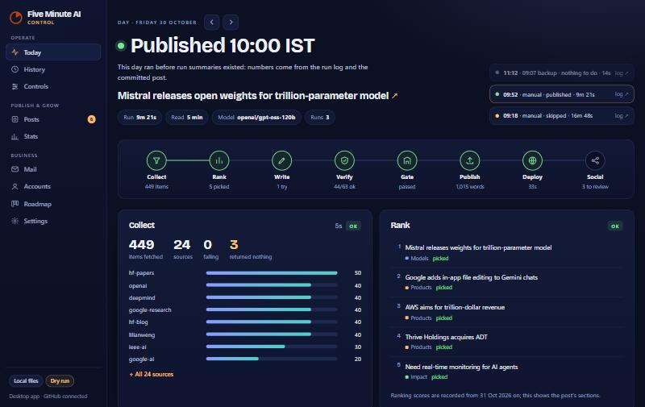
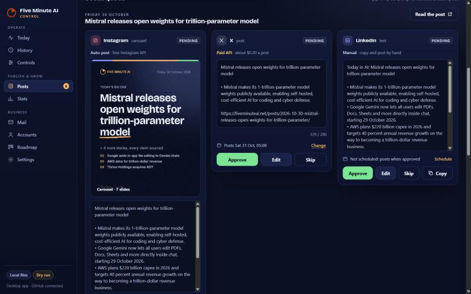
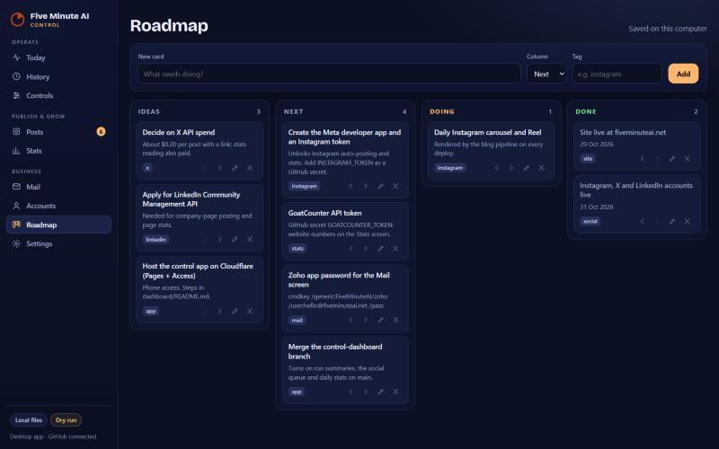

Run your daily publication from one window on your own PC
The desk that runs fiveminuteai.net every morning: the pipeline run, the posts for Instagram, X and LinkedIn, mail, accounts and the roadmap, in one Windows app. Your tokens and drafts never leave your machine.
$99 / ₹2,999 one-time · founder price $69 / ₹1,999Pre-orders open soon. Join the waitlist to hear first.Join the waitlist
Waitlist: email hello@fiveminuteai.net with the subject “Waitlist”. One email when it opens, nothing else.

Today: every stage of the morning run, from 449 items collected to the published post.

Posts: approve, edit or skip each platform's post. LinkedIn is copy-and-post by hand, by design.

Roadmap: a board saved on your computer, next to the work it tracks.
What it does
Today and History. See each run's stages, timings and failures, 21 days back, with links to the logs.
Posts. Instagram through your own Meta app, X through your own key with the cost shown before sending, LinkedIn as copy-out.
Mail. Your Zoho inbox, read-only over IMAP, with the password kept in Windows Credential Manager.
Accounts. Handles, status and the Bitwarden item name for each account. The desk never reads a password.
Roadmap and Stats. A local board, plus site and Instagram numbers collected daily.
What you need
Windows 10 or 11.
A publication that builds through GitHub Actions (the desk drives the runs).
For Instagram: a professional account and your own Meta developer app (free to create; step-by-step setup included).
For X: your own pay-per-use API key ($0.015 a post, $0.20 with a link, billed by X).
For mail: a paid Zoho Mail plan (the free plan has no IMAP).
Questions
Is it ready?
It runs fiveminuteai.net every day. The version for your own publication is built once enough people pre-order, and the waitlist hears first.
What if it never ships?
Founder licences are fully refundable until the desk ships. If fewer than 5 founders join in the 30-day founder window, it isn't built and everyone is refunded within 7 days. If it hasn't shipped by 31 March 2027, everyone is refunded by 7 April 2027 unless they choose to wait.
Why one-time and not monthly?
Everything runs on your PC, so there is no server to pay for. You get 12 months of updates; renewing updates after that is optional.
Why is LinkedIn copy-and-post?
LinkedIn only allows automated posting for approved companies, so the desk prepares the post and you click Post.
Where does my data go?
Nowhere. Tokens are encrypted on your PC; the seller only sees your purchase record from the checkout.